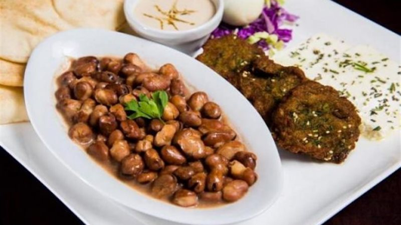
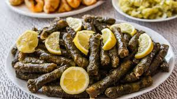

My Favoirate Food in Egypt
Kushari
Warm, carb-loaded coming right at you! Come lunch time in Cairo you’ ll find long queues lined up at every kushari shop around, waiting to get a hot bowl of one of Egypt’ s favourite street foods. Kushari is a filling mix up of rice, macaroni and lentils, topped with tomato garlic sauce and garnished with chickpeas and fried onions. Expect a meal that is substantial, nutrient-packed and cheap – exactly what the Egyptians were after!

Fool && Taameya
Ta'ameya and ful medames, which are essentially fava beans and falafel are the original Egyptian fast foods. They're a staple of the Egyptian diet, mainly because they're filling and use ingredients that are easily accessible in the country. he ful is made of fava beans that are cooked for hours in a pot called a qedra. Ta'ameya, which is an Egyptian falafel , is made out of crushed fava beans that is later made into a paste, then fried. Nowadays you can find falafels all over the Middle East however, Egypt is the actual origin of these delightful fried treats. A perfect dish for all you vegs!
Mahshi
Mahshi is one of Egypt’s most beloved traditional dishes, enjoyed by families across the country. It’s a hearty meal made by stuffing vegetables like grape leaves, zucchini, peppers, or eggplants with a flavorful mix of rice, herbs, and spices. The stuffed vegetables are then slowly cooked in a rich tomato sauce, giving them a tender texture and a delicious, savory taste. Mahshi is often served during family gatherings, holidays, and special occasions, making it a symbol of warmth and Egyptian hospitality. While many Middle Eastern countries have their own versions of stuffed vegetables, Egyptians are especially proud of their unique flavors and cooking style — truly a comfort food masterpiece!
